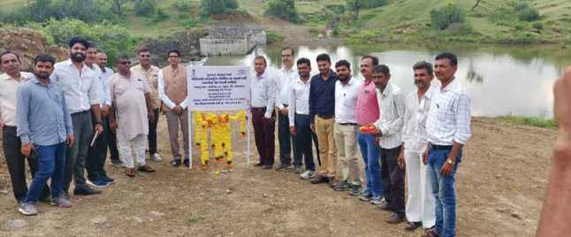
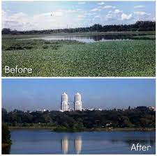
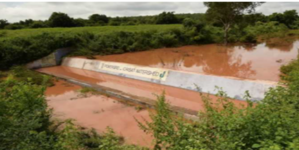
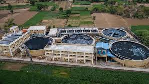
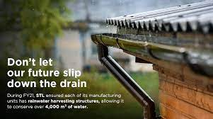
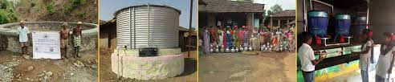
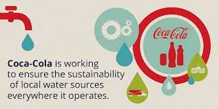

CSRs
Some of the recent CSR Projects:
1.Started by Pidilite Industries Ltd (Project Budget: 15.47 Cr)

Project Location: Gujarat
Project Description:
Pidilite Industries Ltd contributed to CSR towards Water resource management and infrastructure development for Agriculture, etc. A major focus of the project was to support activities for the Conservation of water and efficient usage of water-soluble fertilizers. Under this project, approximately 512 hectares of farmland were covered under drip irrigation. In order to increase the quality of groundwater, the corporation has continued to recharge wells. During the year, 221 wells in Mahuva Taluka's 27 villages were refilled. For the purpose of giving technical inputs to farmers, the firm has established arrangements/signed MOUs with numerous institutes and professional organizations. These tie-ups have aided farmers in adopting a modern package of methods for working towards reducing input costs and boosting yields of vital crops in the region, such as cotton, onion, groundnut, coconut, and so on.2.Started by Infosys Ltd (Project Budget: 36.76 Cr)

Partners for implementing the project:
KIADB (Karnataka Industrial Areas Development Board), MUDA - Mysore Urban Development AuthorityProject Location:
Bangalore-Karnataka, Mysore-KarnatakaProject description:
The Hebbal Lake in Mysuru, which is stretched over 40 acres in the Hebbal Industrial Area, was formerly a major supply of drinkable water. The lake, however, lost its beauty over time as a result of the vast urbanization that surrounded it. Untreated sewage from residential and industrial enterprises began to pour into the lake and its environs. To revive the lake and restore its former splendor, the firm partnered with the Mysore administration – KIADB and MUDA. Desilting and beautification were part of the project, which included the creation of a walking path and the planting of trees surrounding it. A sewage treatment facility (STP) near the lake is being built with the capacity to treat 8 million liters of sewage per day, removing untreated sewage from the lake and its environs. The STP will use advanced membrane bioreactor technology to ensure that only the best quality products are used. This lake rejuvenation and conservation project is intended to serve as a model for similar initiatives that can be implemented by government agencies around the country.3.Power Grid Corporation Of India Ltd (Project Budget: 9.42 Cr)

Partners for implementing the project:
UPSIDCO, UP State Agro, District Administration, Uttar Pradesh Small Industries Corporation Ltd. (UPSICL), Rural Water Supply & Sanitation (RWSS), UP Jal Nigam, RED, EESL, UPRNSS, IISc Bangalore, Direct ImplementationProject Location:
Nalanda-Bihar, Bengaluru-Karnataka, East Godavari-Andhra Pradesh, Janjgir-Champa-Chandigarh, Lucknow-Uttar PradeshProject Description:
Through the following initiatives, the Company donated to CSR for various water conservation programs:- Nalanda: Installation of 20 nos. water ATM.
- Bengaluru: For the arrangement of drinking water, and drip irrigation for plantation, borewells were drilled.
- Jhansi: Installation of 200 hand pumps
- Shahjahanpur: Installation of 195 hand pumps
- Pilibhit: Installation of 150 hand pumps
- In districts of UP: Supply, Installation and commissioning of numerous hand pumps
- Taga Village: Water supply in 7 wards
- contributing towards the Scientific Study of Cauvery River Basin in Kodagu.
- contributing towards the Pipeline from OHSR to S. C. Peta, K Nayakampalli (V) of Gandepalli (M), East Godavari District.
However, corporate and government initiatives will be successful only if we, as a community, begin to view water as a resource rather than a commodity.
Some of the Top CSR projects of India investing millions in water conservation are:
1. Hindustan Zinc: Certified water positive company

Hindustan Zinc Limited (HZL) is a recognised water conservation company that is quickly establishing itself as a regional and national leader in water conservation.
Being a subsidiary of Vedanta Group, it has been declared as te water positive company. HZL has state effluent treatment plants and recycling facilities, as well as sewage treatment plants, increased water vigilance, and water storage facilities, all of which contribute to water management and progress.
As per HZL’s CEO, HZL is moving forward to achieve the Sustainable Development Goals, and become 5 times water positive.
Recognizable work by HZL:
- Installation of Water ATMs for villagers to help them get pure water at reasonable cost
- Supply of water through water tankers at places were clean water source is not available.
- Installation of RO Plants and Water ATMs, which acts as water source for 3200 families in 25 villages.
2.Sterlite Technologies Limited (STL)
They aim to address the water crisis by pursuing innovative approaches that promote circular use of this limited natural resource, such as appropriately treating wastewater for groundwater recharge, conserving water, ensuring access to clean and safe drinking water, using treated water for afforestation and agriculture, and sensitising stakeholders in communities and within STL through engagement programmes that promote responsible use. STL has recently partnershiped with World Bank’s 2030 Water Resources Group. They works together to identify innovative and tech-driven solutions to save water resources and increase water security through long-term behavioural change, groundwater replenishment, and improved livelihoods. Till now, very large quantity of water has been recuycled and reused through their water intervention.
3.Hinduja Group
In 2020, Hinduja Group has contributed Rs. 34 crores towards water conservation, stewardship and restoration. The Group is also involved in rehabilitating water structures such as lakes, ponds, tanks, sewers, rivers, and step wells, as well as providing safe drinking water, rooftop harvesting in places with less than 200 mm of rainfall, wetlands restoration, and Himalayan springs development.
4.Coca-Cola
Coca-Cola India recognises the importance of water and has worked for more than a decade to assure its availability, not just for its own operations but also for the communities around it, through its water strategy, which focuses on Reduce, Reuse, Recycle, and Replenish. Coca-Cola has been able to make a big and good influence on India, with the establishment of 500 water replenishment structures capable of replacing 25.1 billion litres of water.